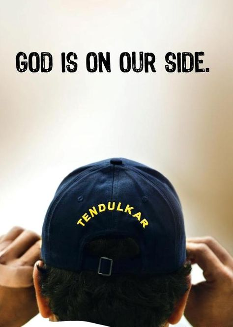
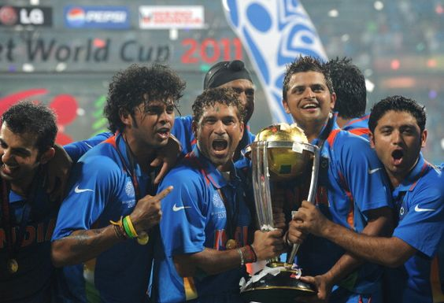
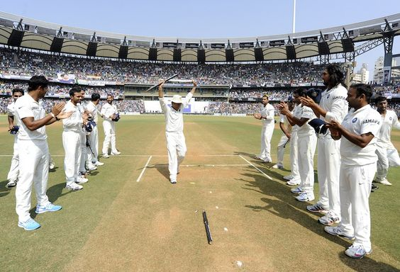
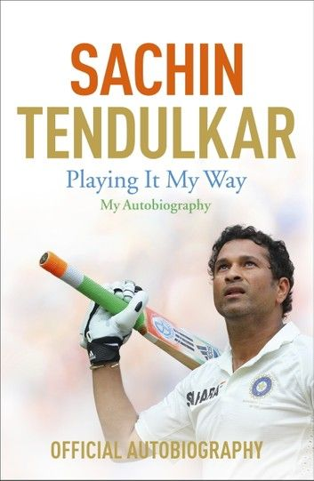
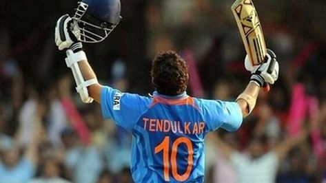
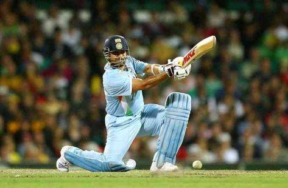
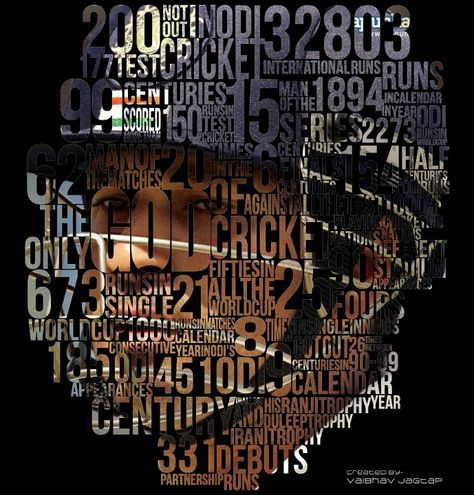
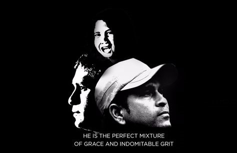

Tribute Page
Sachin Tendulkar
Master Blaster
Dont stop chasing your dreams because dreams do come true
Sachin Tendulkar's life Timeline
- April 24, 1973 : Born in Bombay
- On 14 November 1987, at age 14, Tendulkar was selected to represent Bombay in the Ranji Trophy for the 1987–88 season, but he was not selected for the final eleven in any of the matches, though he was often used as a substitute fielder.
- On 11 December 1988, aged 15 years and 232 days, Tendulkar made his debut for Bombay against Gujarat at Wankhede Stadium and scored 100 not out in that match, making him the youngest Indian to score a century on debut in first-class cricket.
- 1989 Tendulkar makes his international cricket debut for India at the age of 16.
- 1990-1994 Establishes himself as a prolific batsman in international cricket, displaying remarkable consistency.
- 
- 1998 Briefly captains the Indian cricket team.
- 2003 Plays a key role in India's journey to the World Cup final, scoring heavily in the tournament.
- 2010 Becomes the first player to score a double century in One Day Internationals (ODIs).
- 2011 Wins the ICC Cricket World Cup with India.
- 
- March 16, 2012 Tendulkar becomes the first cricketer to score 100 international centuries, reaching the milestone in a Test match against Bangladesh.
- November 16, 2013 Sachin Tendulkar plays his 200th and final Test match, retiring from international cricket at Wankhede Stadium in Mumbai.
- 
- November 2013 Awarded the Bharat Ratna, India's highest civilian award.
-

- Sachin Tendulkar is widely regarded as one of the greatest batsmen in the history of cricket and is often referred to as the "Little Master" or "Master Blaster." impact on Indian cricket and his achievements have left an indelible mark on the sport.
- 
- Sachin Tendulkar's autobiography is titled"Playing It My Way." It was released in November 2014 and quickly became a bestseller."Playing It My Way" not only delves into the highs and lows of Tendulkar's cricketing career but also provides readers with a glimpse into his personal life, values, and the principles that guided him. The autobiography allows fans to better understand the man behind the cricketing legend and remains a cherished piece of literature for cricket enthusiasts and admirers of Sachin Tendulkar.
"Masterful Moments: Sachin's Legacy in Frames"
- 
- 
- 
- 